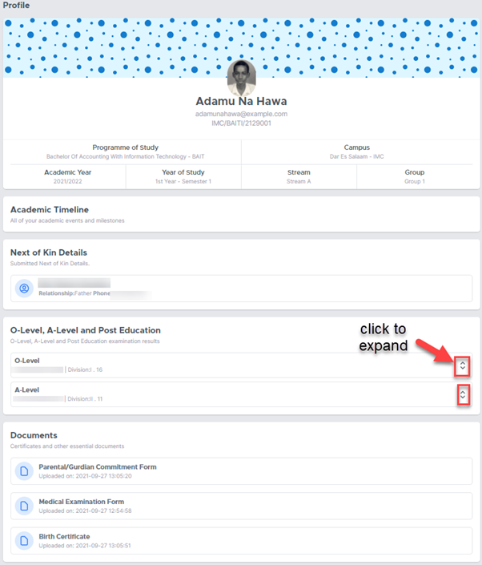
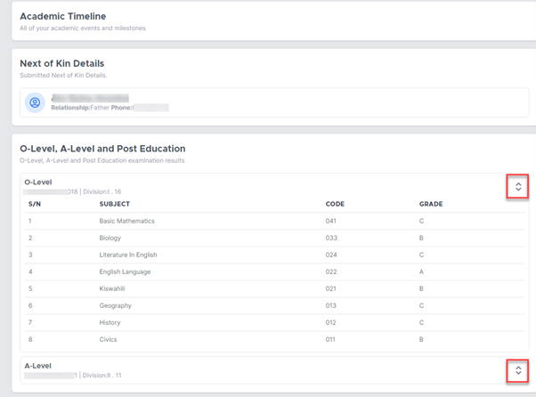

Profile¶
Profile page provides all the information about student as shown
 Academic Timeline¶
Provides the history of your academic information at IFM. Previous academics records are shown here.
Next of Kin Details¶
Provides information about next of kin.
Caution
Make sure this information is always correct.
Past education section¶
Provides details of your past academic records. The arrows can be expanded to provide more information.
Documents¶
This section list the documents you have provided during registration.